You're Mario, diving into 3D worlds inside Peach's Castle. You're jumping, flipping, and flying to snag Power Stars from wild levels.
Battle Bowser, rescue Princess Peach, and explore every nook and cranny of this groundbreaking, 3D mushroom kingdom.
It's a total 64-bit blast of Mario magic!
Some CharactersMario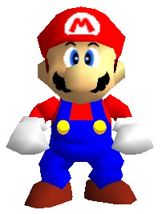 Toad 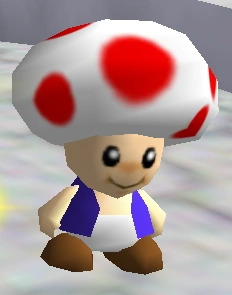 Yoshi 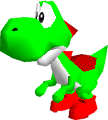 |
Some BossesWhomp King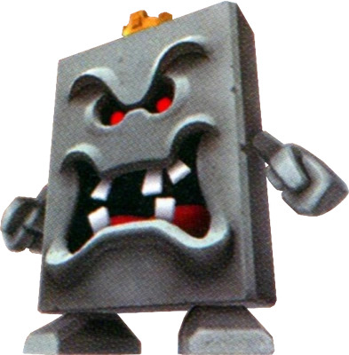 King bob-omb 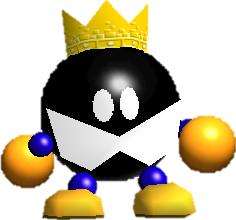 Bowser 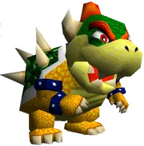 |
Power-upsWing Cap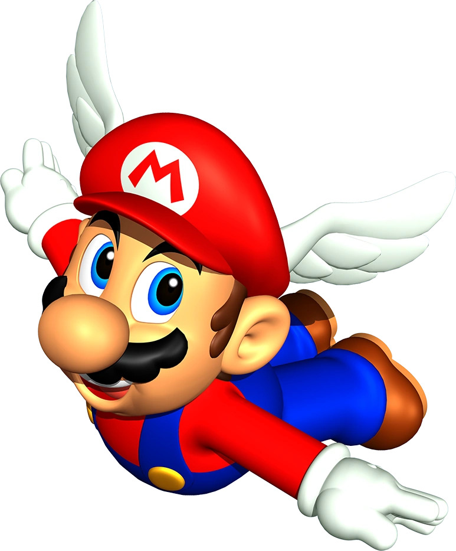 Slap on that Wing Cap and Mario can soar through the skies for a limited time. It's all about hitting those high-up places he couldn't reach before, unlocking a whole new level of high-flying fun and exploration! Metal Mario 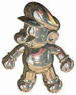 When Mario goes Metal, he turns into this heavy-duty, unstoppable dude. He can cruise over lava without a sweat but sinks like a rock underwater and can't jump as high 'cause of the extra weight. The trade-off? He's totally immune to attacks, making him invincible. It's like he's a super tough, metal Mario machine! Invisiblity 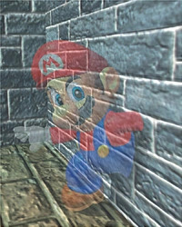 When Mario goes invisible, it's like he becomes a ghost. He can just glide through walls like they're not even there, and most baddies won't even know he's around. It's like Mario's own stealth mode, sneaking around the worlds undetected! |
| 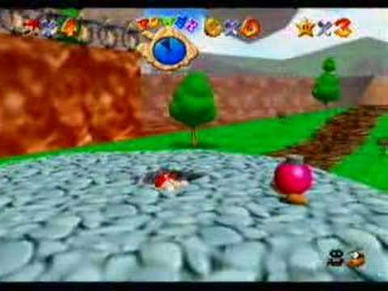 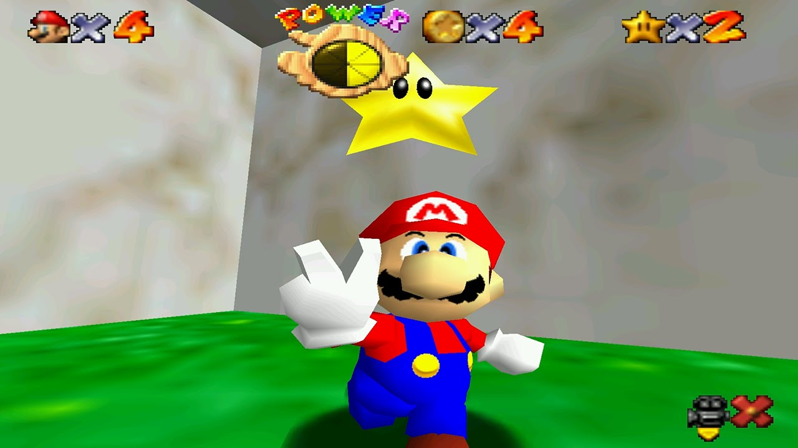 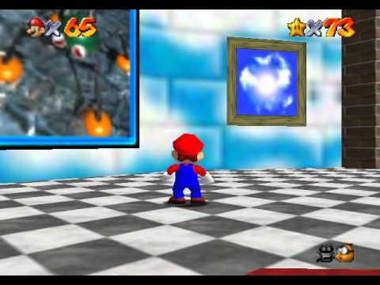 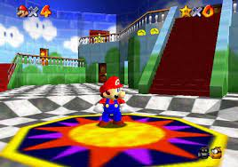 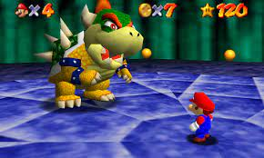 |